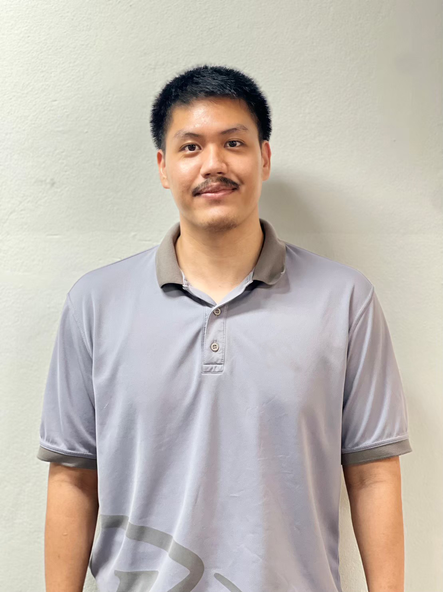

Mr.Nat Tanprasert

Summary
I am a person with good manners, easy to get along with
everyone. I am always ready to learn new things. I am
punctual and disciplined
Education
- Bachelor of Business Administration, Khonkaen University GPA 3.15
Work Experience
Marketing Officer - Double A (1991) Public Company Limited
(2016 - 2019)
- Collect product information and competitor pricing data in the market, along with
relevant data for consistently monitoring market share.
- Plan and manage product development in collaboration with the sales team and
project development department.
- Collaborate in planning and controlling marketing activities to increase the
customer base, both offline and online.
- Coordinate and prepare venues and equipment for promotional booths, and
summarize the results of the promotional activities.
- Control the issuance of price quotations from agencies or suppliers, request
budget approval, and execute within authorized frameworks. Monitor the payment
process for goods and services.
- Control and oversee the inspection of the condition of promotional signs,
directional signs, sales conversion signs, billboard signs, and other marketing
signage.
Genneral Manager - Chiang Rai Usedcar
(2019-2022)
- Think and present special promotions to promote sales.
- Control the process of buying and selling used cars.
- Control and allocate queues for delivering cars to customers in various provinces.
- Prepare and design advertising media both online and offline to advertise products
within the store.
Graphic designer - Appswin Limited Partnership.
(2022-2023)
- Make images graphinc(.PNG) for elementer websites.
- Make images graphinc(.GIF) for elementer websites.
- Make logo for websites.
- Create a layout for text and images of media on the website.
Business analyst officer - Toyota Khonkane head office
(2023-Current)
- Analyze and troubleshoot fundamental system issues to align with user
functionality.
- Collaborate with both internal and external IT teams in cases of system
operational issues that do not meet the specified requirements.
- Control and manage master data used within the organization for car model
data, car types, and car colors.
- Control and manage master data used within the organization for accessories
information.
- Analyze data to gain an understanding of business processes in order to
assess areas for improvement and development.
- Collect and compile results from process development, and summarize the
project's operational outcomes.
- Designing the workflow for the development of a new system. UX/UI
Skills
- Microsoft Office : Excellent
- Adobe illustrator : Good
- Adobe Photoshop : Good
- Canva : Good
- Figma : Good
- Miro : Good
Contact Me